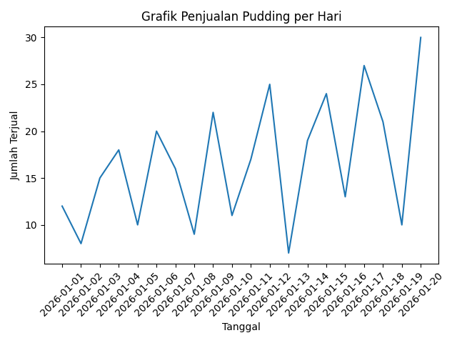
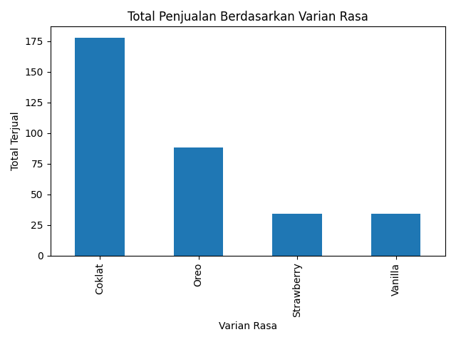
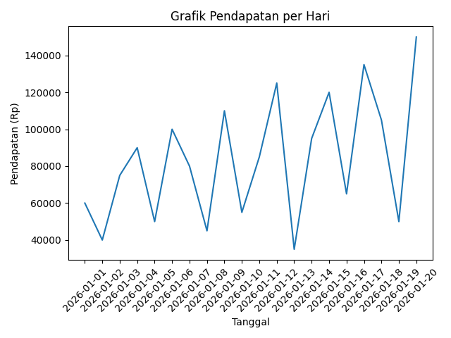

Publikasi Web - Tugas Informatika (SH1)
Dataset yang digunakan merupakan data penjualan pudding selama 20 hari. Data berisi tanggal penjualan, varian rasa, jumlah terjual, harga, dan total pendapatan. Analisis dilakukan menggunakan Python di Google Colab dengan visualisasi grafik untuk melihat tren penjualan dan performa setiap varian rasa.
1. Mengimpor dataset CSV ke Google Colab.
2. Membersihkan dan membaca data menggunakan Pandas.
3. Membuat visualisasi grafik menggunakan Matplotlib.
4. Menganalisis tren penjualan, varian terlaris, dan pendapatan harian.

Grafik menunjukkan tren jumlah penjualan pudding setiap hari. Terlihat adanya peningkatan penjualan pada beberapa hari tertentu.

Grafik batang menunjukkan bahwa varian rasa Coklat menjadi rasa yang paling laris dibandingkan varian lainnya.

Grafik ini menunjukkan perubahan total pendapatan harian yang dipengaruhi oleh jumlah penjualan pudding.
Berdasarkan hasil analisis data, penjualan pudding mengalami peningkatan pada hari-hari tertentu dengan varian Coklat sebagai produk paling diminati. Rekomendasi: fokus produksi pada rasa terlaris, meningkatkan promosi pada hari dengan penjualan rendah, serta menambah inovasi varian rasa untuk menarik lebih banyak konsumen siswa.
Nama: Annisa Shafira Yasmin
Kelas: XII-3
Project: Analisis Data Penjualan Pudding (SH1)
Achievement:
Juara Lomba Fotografi FLS2N Kansas 2023 & Kansas 2024 Festival Fotografi Kartini
Link Repository GitHub:
https://github.com/itsshapeAr10/Data-Analysis-Pudding
Notebook Google Colab, dataset (data.csv), dan grafik tersedia di repository sebagai bentuk transparansi analisis data.